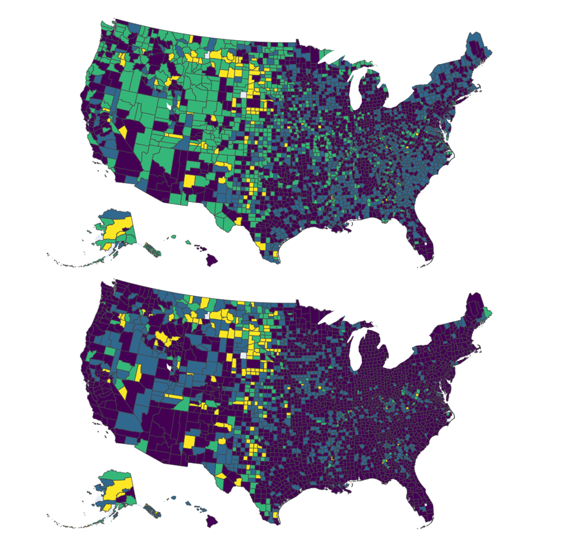
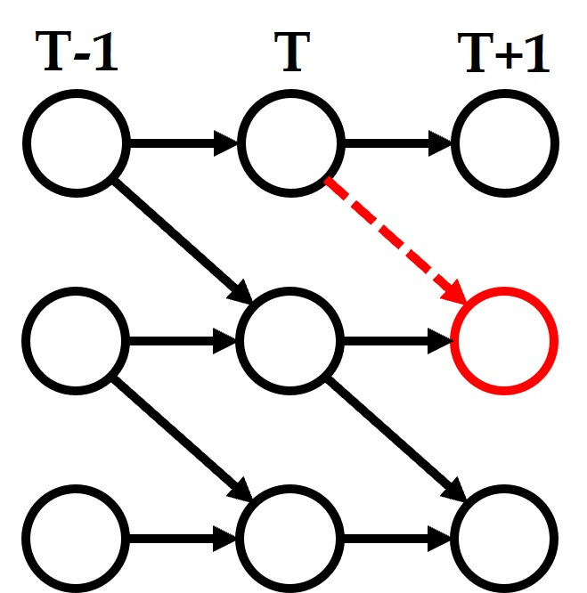
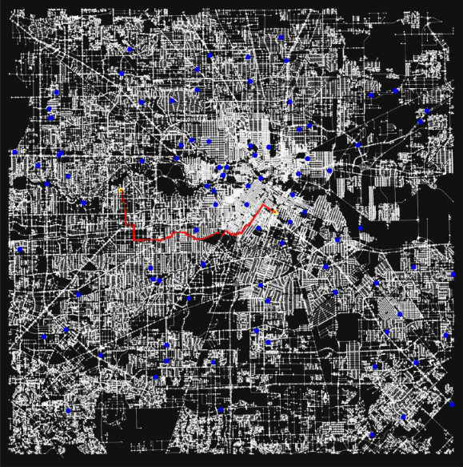

|
Ziyi Zhang I'm a fourth-year Ph.D. student in the Department of Electrical and Computer Engineering at Texas A&M University, supervised by Prof. Nick Duffield. Before that, I obtained my B.Eng. degree from the University of Glasgow and the University of Electronic Science and Technology of China (UESTC). My research focuses on machine learning and causality in time series data, combining theoretical foundations with real-world applications (e.g., supply chain, healthcare, recommender systems, and anomaly detection). |

|
News
|
News
|
Research |
|  |
Mining Spatiotemporal Mobility Patterns using Improved Deep Time Series Clustering
Ziyi Zhang, Diya Li, Zhe Zhang, Nick Duffield ISPRS International Journal of Geo-Information, 2024; 🏆The Jack Dangermond Award-Best Paper 2024. A novel time series clustering framework that effectively handles high dimensionality, noise, and time distortions, enabling better geo-spatiotemporal decision-making. |
|  |
Learning Flexible Time-windowed Granger Causality Integrating Heterogeneous Interventional Time Deries Data
Ziyi Zhang, Shaogang Ren, Xiaoning Qian, Nick Duffield ACM SIGKDD Conference on Knowledge Discovery and Data Mining, 2024. A theoretically guranteeed method that infers Granger causal structure and identifies unknown interventional targets by leveraging heterogeneous interventional time series data. |
|  |
A Reinforcement Learning-based Routing Algorithm for Large Street Networks
Diya Li, Zhe Zhang, Bahareh Alizadeh, Ziyi Zhang, Nick Duffield, Michelle A Meyer, Courtney M Thompson, Huilin Gao, Amir H Behzadan International Journal of Geographical Information Science, 2024. A reinforcement learning-based method that optimizes evacuation routes by dynamically adapting to real-time disaster conditions. |